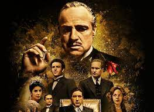
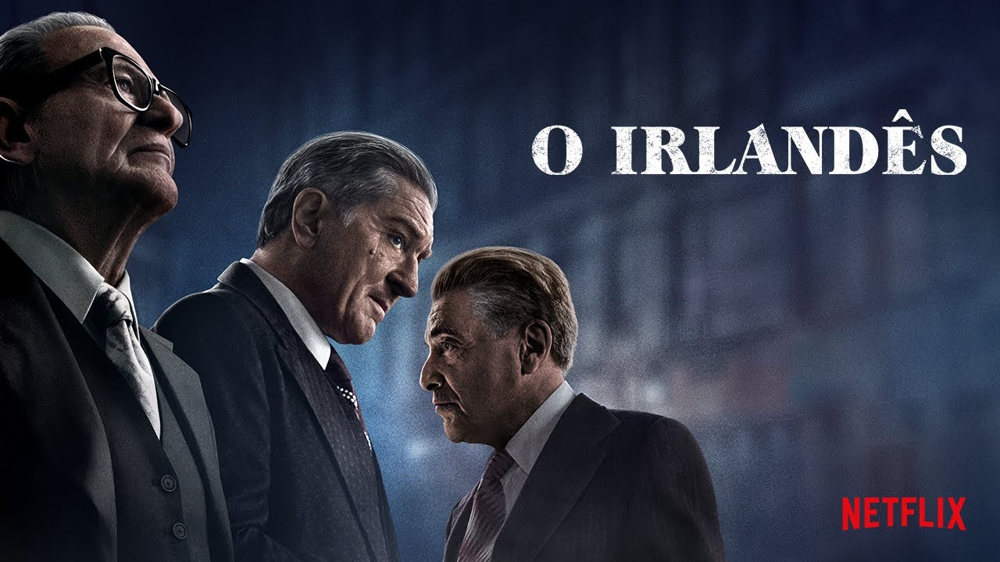

O Poderoso Chefão

Uma família mafiosa luta para estabelecer sua supremacia nos Estados
Unidos depois da Segunda Guerra Mundial. Uma tentativa de
assassinato deixa o chefão Vito Corleone incapacitado e força os
filhos Michael e Sonny a assumir os negócios.
Scarface
 Após receber residência permanente nos Estados Unidos em troca do
assassinato de um oficial do governo cubano, Tony Montana se torna o
chefe do tráfico de drogas em Miami. Matando qualquer um que entre
em seu caminho, Tony eventualmente se torna o maior traficante da
Flórida, controlando quase toda a cocaína que entra em Miami. Porém,
a pressão da polícia, as guerras com cartéis colombianos e sua
própria paranoia servem para alimentar as chamas de sua eventual
queda.
Após receber residência permanente nos Estados Unidos em troca do
assassinato de um oficial do governo cubano, Tony Montana se torna o
chefe do tráfico de drogas em Miami. Matando qualquer um que entre
em seu caminho, Tony eventualmente se torna o maior traficante da
Flórida, controlando quase toda a cocaína que entra em Miami. Porém,
a pressão da polícia, as guerras com cartéis colombianos e sua
própria paranoia servem para alimentar as chamas de sua eventual
queda.
Pulp Fiction
 Assassino que trabalha para a máfia se apaixona pela esposa de seu
chefe quando é convidado a acompanhá-la, um boxeador descumpre sua
promessa de perder uma luta e um casal tenta um assalto que
rapidamente sai do controle.
Assassino que trabalha para a máfia se apaixona pela esposa de seu
chefe quando é convidado a acompanhá-la, um boxeador descumpre sua
promessa de perder uma luta e um casal tenta um assalto que
rapidamente sai do controle.
Irlandes

Robert De Niro interpreta Frank Sheeran, o narrador da história que reconta suas memórias como assassino de aluguel de máfia. Na vida real, Sheeran teve ligações com a família mafiosa Bufalino e supostamente confessou ter assassinado o líder sindical Jimmy Hoffa pouco antes de sua morte.